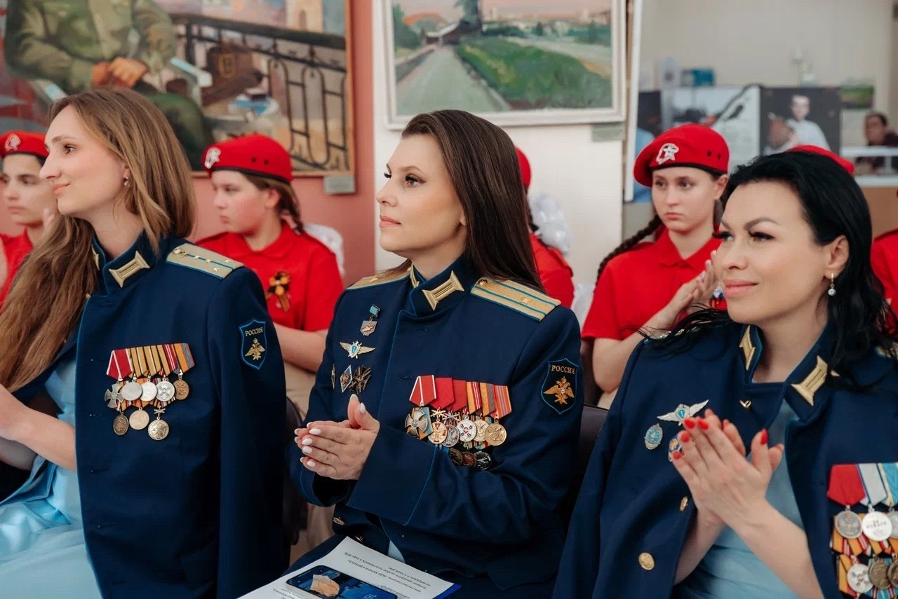

Китель победы
9 мая 2026
В преддверии Дня Победы в г.о.Клин состоялось торжественное открытие фотовыставки Всероссийского проекта «Китель Победы»! В Москве и Московской области проект реализован Комитетом семей воинов Отечества совместно с Ветеранской организацией Главного военно-политического управления «Соратники» при поддержке компании «Мегапир». Всероссийский проект «КИТЕЛЬ ПОБЕДЫ» направлен на сохранение памяти о ветеранах Великой Отечественной войны через уникальную фотосъемку наследников Победителей, несущих память о своем ветеране. Торжественное мероприятия открыл глава г.о. Клин Василий Иванович Власов, который поддержал патриотический проект. Ознакомившись с экспозицией, Василий Иванович выступил с приветственным словом в адрес наших ветеранов! Мероприятие посетил известный спортсмен, блогер, певец Александр Зарубин. Александр поздравил ветеранов с Днём Победы и произнес важные патриотические слова для нашего молодого поколения! Несомненно главным героем нашего проекта стал ветеран Великой Отечественной войны, общественный деятель, поэт, почетный гражданин г.о.Клин полковник Виктор Васильевич Матросов! Который в свои 98 лет ведет активную творческую жизнь и вдохновляет нас всех на светлое будущее! Почетным гостем мероприятия выступила знаменитая вертолетчица, полковник, которая вошла в историю нашей страны как женщина совершившая сверхдальний перелет Москва — Майами на вертолете Ми 24, вице-президент Союза женщин летных специальностей «Авиатриса», председатель регионального отделения Союза женщин России г.о. Щёлково Галина Петровна Скробова- Кошкина! Общероссийскую общественную организации "ОФИЦЕРЫ РОССИИ" представил капитан Калмыков Дмитрий Николаевич. Патриотическую атмосферу мероприятия создали творческие номера в исполнении Дмитрия Сергеева, Виталия Алешкова, Александра Чеснокова и вокальной группы «ЖЕНЫ ГЕРОЕВ». Организаторы мероприятия выражают искренние слова благодарности за поддержку Администрации г.о. Клин и всем участникам открытия фотовыставки! Фотографии Александра Кузнецова Александр Кузнецов Василий Власов Саша Зарубин SASHA STONE Комитет Семей Воинов Отечества Ирина Костюкова Общероссийская организация «ОФИЦЕРЫ РОССИИ» Союз женщин России Союз женщин России Московской области «Авиатриса» Союз женщин летных специальностей